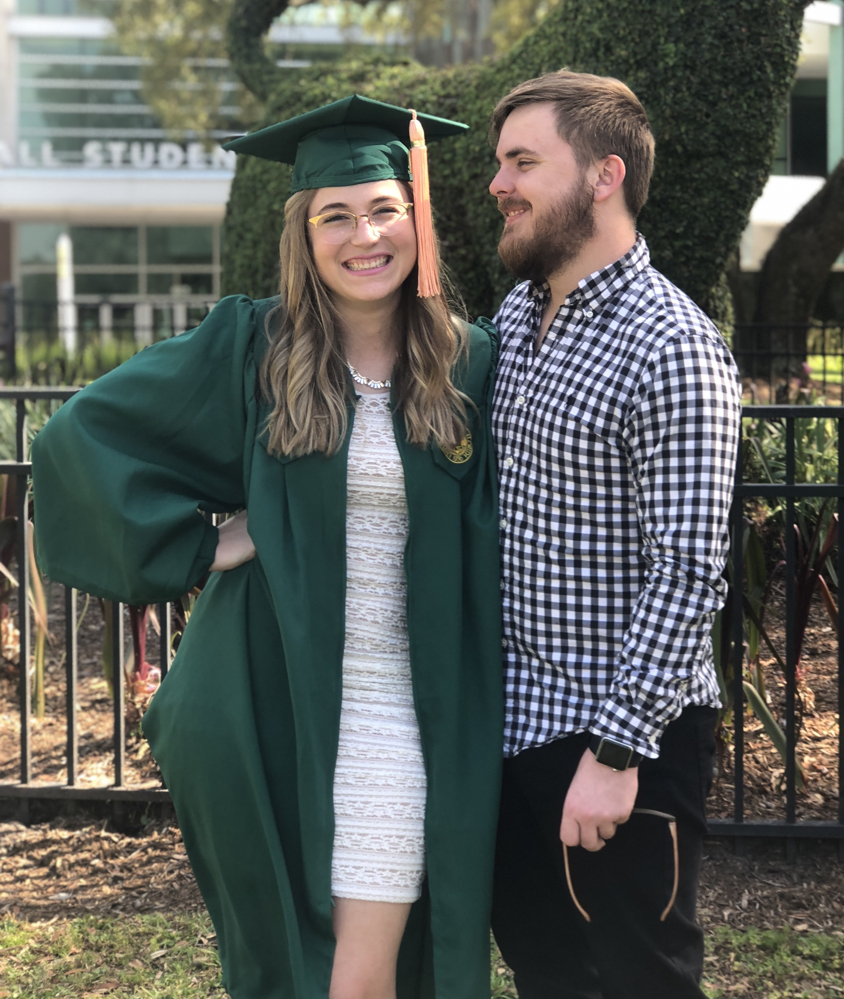

ABOUT ME
I didn't know it yet, but my passion for technology began in 2014 when I was hired to work at the Apple store. I was still in college, needed a job to pay the bills, and had experience working in retail. I didn't consider myself a "techy person". I owned a shattered iPhone 4S and didn't know much about operating systems or applications. Luckily, the store took me on and taught me about the technology. At the time, I was learning what I needed to know in order to sell Apple products. Over the five years that I worked at Apple I gravitated toward the genius bar because I enjoyed solving people's problems and partnering with them to create solutions. I did this for about a year as a technician but was then promoted to the role of Genius Administrator which meant that I worked with a team of people in the repair room to maintain repair room operations. It was a great opportunity that really taught me to be resourceful and creative while working within systems that have a very specific scopes. Above all, I learned to appreciate the idea of scope. After all, I worked on a team supporting one of the busiest genius bars in the entire company.
In 2018 I graduated from the University of South Florida with my bachelors degree in Public Health. After graduating, I was eager to find a job that allowed me to use the education I received from school but soon learned that a lot of opportunities in Public Health require a graduate degree. Going to graduate school was a big financial commitment and I did not have any experience working in the health industry so I decided to seek out an opportunity that would allow me to work in the industry and gain some hands-on experience.
Fortunately, I secured a job as an Administrative Assistant at Tampa General hospital in 2019. Leaving Apple was difficult, but I knew I needed to make a change if I was going to explore new opportunities. Working at the hospital taught me a lot about the challenges present in the healthcare industry, which I knew about from school but seeing the reality of it was definitely eye opening. The experience grew my respect for healthcare workers, which was already very strong after growing up with multiple family members who worked as nurses. However, the biggest lesson I learned really caught me by surprise - I missed working with technology. It was an overwhelming revelation. I worried that I wasted my college education on the wrong degree and I was not sure how to make the transition to find an opportunity in tech. It did not take long for me to get past my fear and begin my research on how to move forward.
This led to me securing a position as a Technology Recruiter. I am so grateful for this opportunity. The perspective recruiting offers you is so unique. You get insights from hiring managers, HR departments, and candidates. My approach was to get as involved with the Tampa tech community as possible. I volunteered at major tech events like Synapse, but more importantly I prioritized the smaller meetups happening throughout the community. The people I met and the conversations I had led me to believe I wanted to learn more about software development. I started researching bootcamps, but a co-worker mentioned a program to me that offered free training and that's how I learned about LaunchCode!
LaunchCode is a non-profit organization dedicated to providing training to people who are interested in learning software development. When I applied, I was not sure that I would get accepted into the program. I was so grateful when the email came through accepting me into their 2020 LC101 bootcamp! It was exactly what I wanted! However, this fantastic news came with other changes too. Shortly after the program started, Covid-19 was hitting the nation. Social distancing meant that LaunchCode needed to be taught remotely which was an adjustment for everyone. On top of that, my company began doing layoffs in March and since I was the most junior recruiter on my team, I was the first to be let go. All of this happened while me and my husband adjusted to the news that we are going to be parents in October! It was great news to us, but the timing of everything did a good job of making us both feel stressed. That said, we composed ourselves and I told myself that this time at home would give me even more time to invest in my coding education. Even as I write this, I am not sure what the future holds but I am confident that things will work out. Until then, I am working on what I can while I can and taking the rest as it comes.
TAMPA TECH
Here are some of the events and resources I used while exploring the Tampa Tech Community:
- Meetup and Eventbrite were great for finding local tech events.
- Tech blogs from Tampa Tech Natives like Global Nerdy will also keep you up to date on local happenings!
- If you're interested in learning software development yourself be sure to check out LaunchCode!
SHAMELESS PLUG FOR MY CORGI'S IG
Not interested in software development? Meet Lola and follow her on instagram @cutiebootylola!